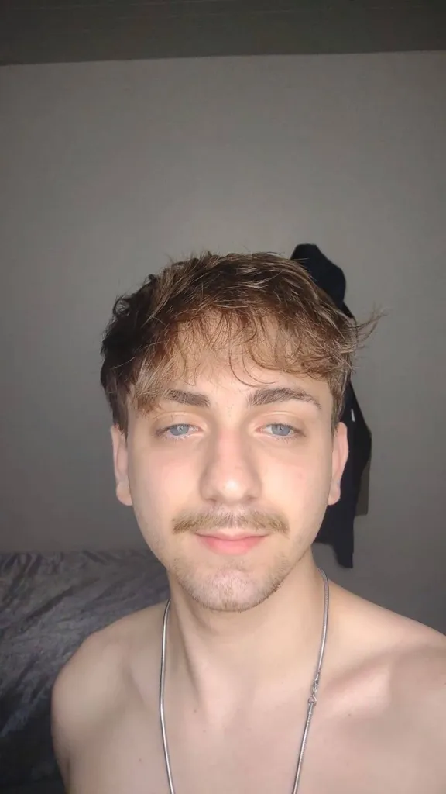

Desenvolvimento web
Criação de páginas e interfaces responsivas.
Olá, eu sou
Transformo curiosidade em projetos e ideias em soluções digitais. Estou construindo minha trajetória na tecnologia, aprendendo na prática e buscando desafios que me façam evoluir.

Sou estudante da área de tecnologia, com formação em andamento em Informática integrada ao Ensino Médio pelo SENAC ZN e curso de Robótica Básica pelo IFRN.
Gosto de aprender desenvolvendo: experimentar ferramentas, entender como as coisas funcionam e transformar conceitos em aplicações. Tenho explorado desenvolvimento web, Python, bancos de dados e criação de sistemas.
Meu objetivo é conquistar uma oportunidade de estágio, contribuir com uma equipe e continuar evoluindo como desenvolvedor.
Conhecimentos desenvolvidos nos estudos e em projetos práticos. Estou sempre ampliando meu repertório.
Criação de páginas e interfaces responsivas.
Lógica, rotas, funcionalidades e aplicações.
Estruturação e persistência de informações.
Resolução de problemas e pensamento computacional.
Uma seleção de experiências práticas desenvolvidas durante meus estudos.
Sistema de mural de avisos para ambiente escolar, com controle de acesso, tema escuro e armazenamento de dados em JSON.
Projeto de catálogo interativo inspirado no universo Pokémon, com foco em apresentação de dados, navegação e recursos visuais.
Aplicação para gerenciamento de dados de um parque solar, com API, banco de dados e painel web com visualização gráfica.
Projetos acadêmicos e de prática. Os detalhes e funcionalidades podem evoluir conforme o desenvolvimento.
Estou aberto a oportunidades de estágio, colaboração em projetos e conversas sobre tecnologia.
Enviar um e-mail ↗